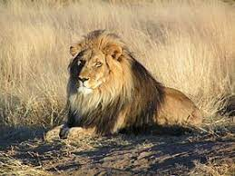
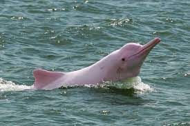
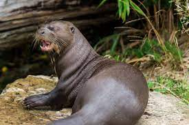

Leão da Savana
Nome científico: Panthera leo
População: ≅ 32000 espécies
Atualmente, instuições contribuem com milhões de dolares em investimentos para a conservação dessa espécies com resultados esparançosos

Boto cor de rosa
Nome científico: Inia geoffrensis
População: 448 espécies
Projeto EcoDrones são usados para monitorar comportamento e hábitos desses animais, afim de políticas públicas que garantam sua preservação

Ariranha
Nome científico:Pteronura brasiliensis
População: ≅ 1000 a 5000 espécies
A Ariranha é preservado com ajuda de instuições com o instituto Chico Mendes através do Plano de Ação Nacional para Conservação da Ariranha

Baleia-Franca
Nome científico:Eubalaena australis
População:≅ 7000 espécies
Protegida em todo o mundo contra caça ilegal através de acordos internacionais